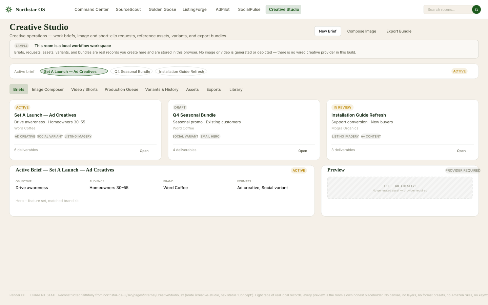
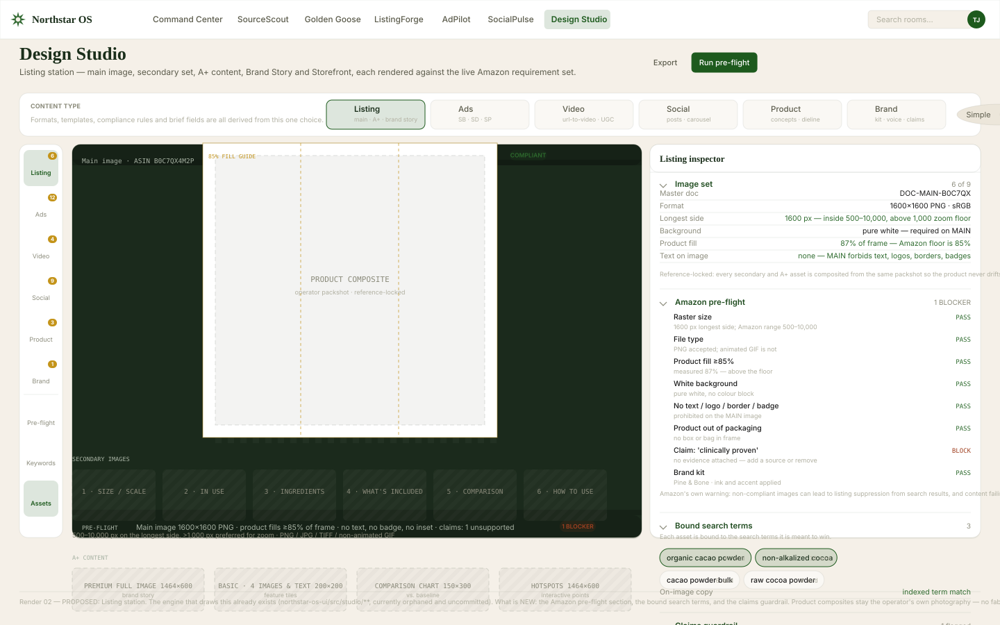
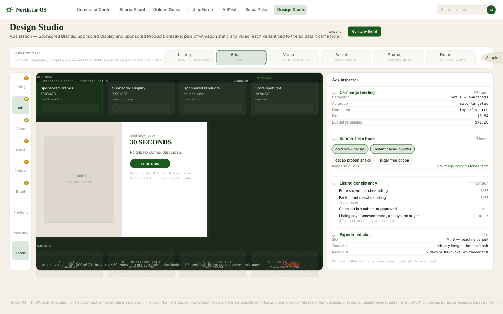
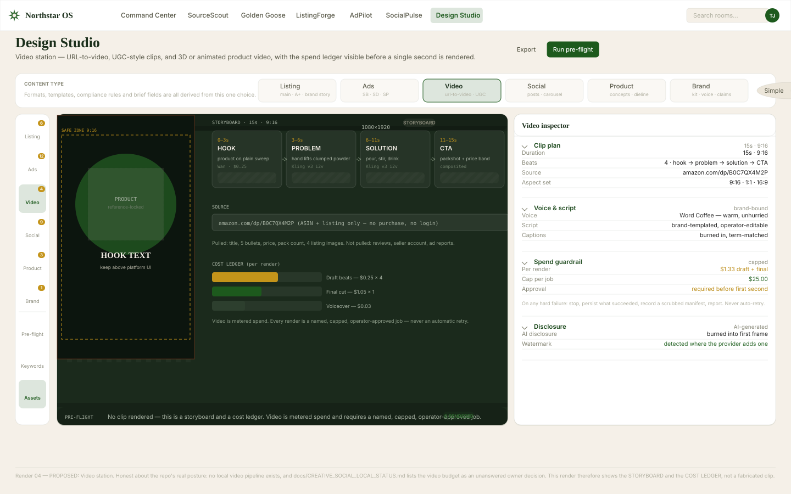
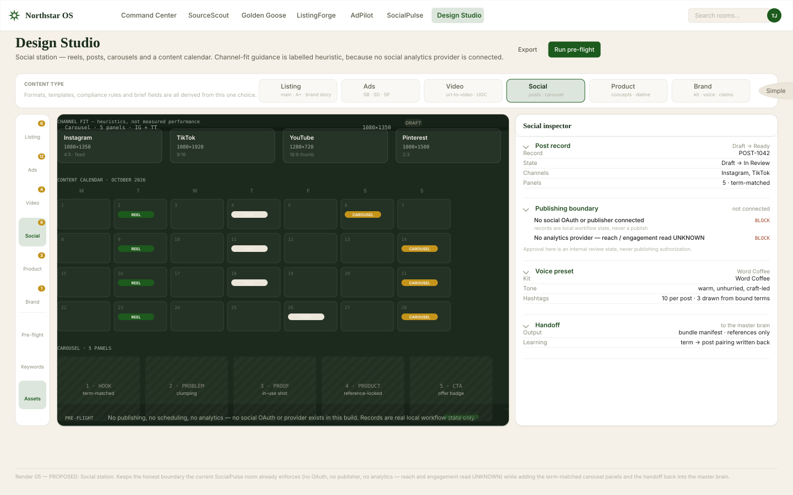
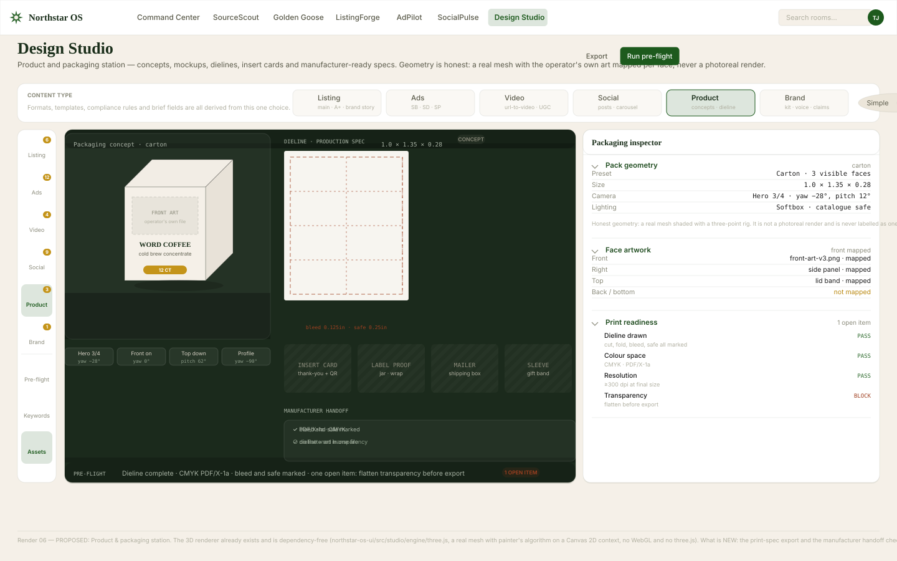
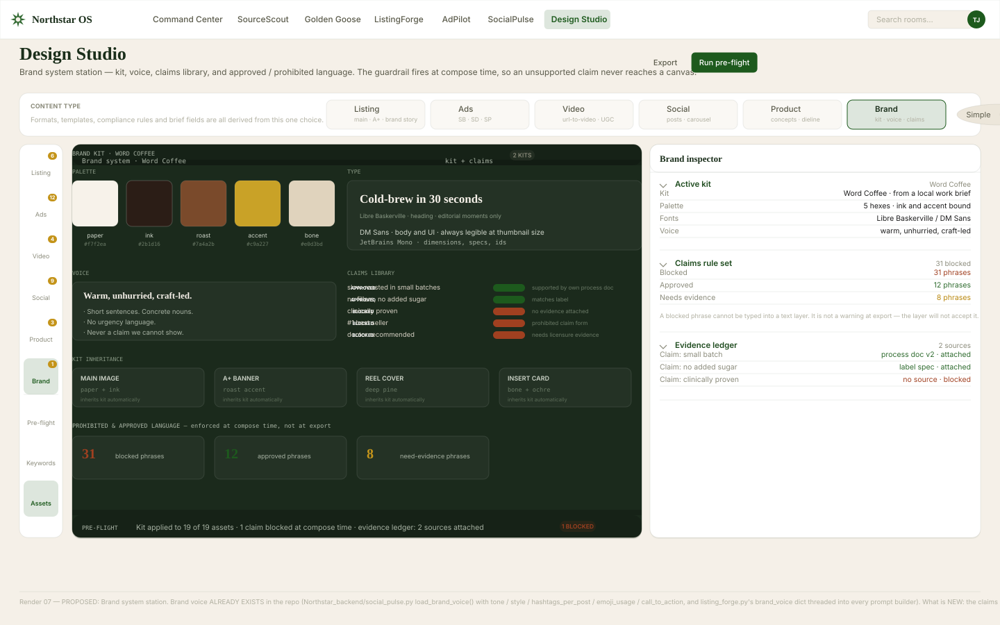
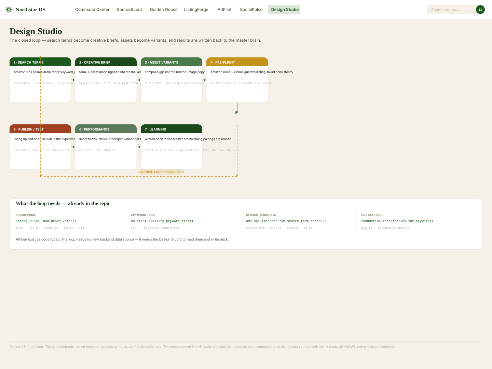
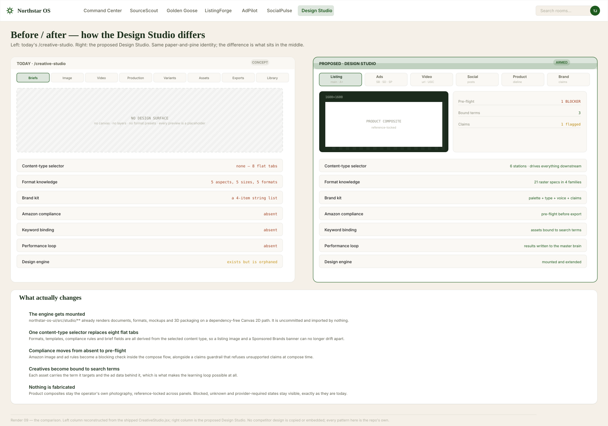

NorthstarOS · Design Studio
Nine renders of one unified Design Studio. Render 00 is today’s shipped
/creative-studio room; renders 02–09 are the proposed studio.
All drawn in the repo’s real design tokens.
CURRENT reconstructed from code PROPOSED not yet built









Every render is a standalone SVG — open it directly, or zoom without losing
quality. The product composites are drawn as the same honest placeholder the
shipped room uses, because no image provider is connected in this build; these renders describe
layout and information architecture, not imagery that does not exist yet.
Tokens are copied verbatim from northstar-os-ui/src/styles/tokens.css so a
render and the shipped room cannot drift apart.
The A+ dimensions in render 02 are the verified Amazon figures, not the repo's.
The research found the repo's own presets.js declares A+ wide banner
970×600, standard 300×300 and comparison 970×300 —
none of which matches Amazon's published module-guide specs
(1464×600 Premium Full Image, 150×300 comparison chart,
200×200 four-images-and-text). The renders deliberately show the
correct values; correcting the repo is Phase 0 of the master blueprint.